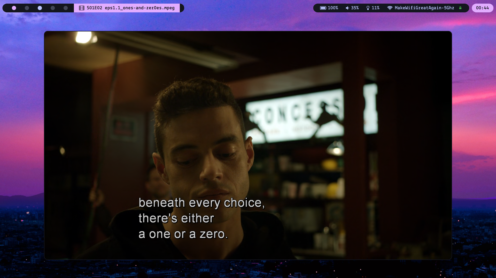

blogs
- icyphox
cs student with a focus in cybersecurity - rainheaven
guy in the military talking about technology, music, and anime
content creators
- luke smith
30-year-old boomer who rants in the woods about technology - lunduke
discussions on tech news, linux, and retro computing - the hated one
videos on privacy and security tutorials and news
guides
- digdeeper
resourceful guides for online privacy - theytrack
detailing the scope of online tracking - degoogle
private+opensource software list - whonix
layman manuals about common online security threats and mitigation techniques - learn x in y minutes
quick guides to learning various computing technologies - over the wire: wargames
linux hacking challenges

desktop
- bspwm
a simple and lightweight window manager configured in bash - neovim
modern vim, a terminal-based and keyboard-based text editor - qutebrowser
vim-based web browser - ungoogled-chromium
a lightweight approach to removing Google web service dependency from the chromium web browser - mpv
a simple and lightweight but highly configurable video player - youtube-dl
download videos from youtube (and other sites) from the terminal (or gui) - freetube
youtube desktop client built for privacy - keepmenu
manages a keepass database using dmenu as a front end - ncmpcpp
a TUI frontend to mpd - cmatrix
displays neat-looking matrix-style scrolling ciphers in the terminal - castero
a configurable TUI client to listen to podcasts and save them for offline playback - kodi
all-in-one media center that plays offline content with web-scraped artwork and streams content from add-ons
mobile
- aurora oss
aurora store and aurora droid to replace the playstore, warden to scan apps for spyware - tachiyomi
free and open source manga reader for android - animezone
free and ad-free android app for streaming and downloading anime - newpipe
the lightweight You T ube experience for Android - antennapod
the easy-to-use, flexible and open-source podcast manager for Android - netguard
A simple way to block access to the internet per application
what i dont use
- streaming services
- cloud services
- social media (except mastodon and linkedin of course)
- proprietary software in general
Every person who matters on the internet — that includes you — should have their own personal website.
30-Year-Old Boomer Larping In The Woods
Where We're Going WE DON'T NEED PLATFORMS
beliefs
minimalism
The process of taking the time to acknowledge what it is we truly value and cutting out all the extra noise. It turns out most humans need very little more materially than their basic necessities (food, water, warmth, shelter, etc.) to live a happy and fulfilled life. In fact, the excess of material possessions can often decrease one's mental wellbeing by increasing the amount of worry, stress, fear, anxiety, and feelings of inadequacy (caused by comparing ourselves to others using money, status, and material possessions as metrics).
veganism
I believe it is morally wrong to cause intentional and unnessecary suffering. Animals are sentient beings meaning they have the ability to suffer. We, as humans, have no necessary reason to eat animals unless we would otherwise starve. Luckily, a lot of us live in abundant Western societies that afford us the option to achieve all of our necessary nutrients without consuming animals or their byproducts. For these reasons, I choose not to financially support industries that depend on the suffering of animals (dairy, meat, egg, or leather, etc.)
freedom
- the ability to say no to do things you don't want to do
- a lack of dependence on others and complex systems
- a lack of monetary and mental restrictions